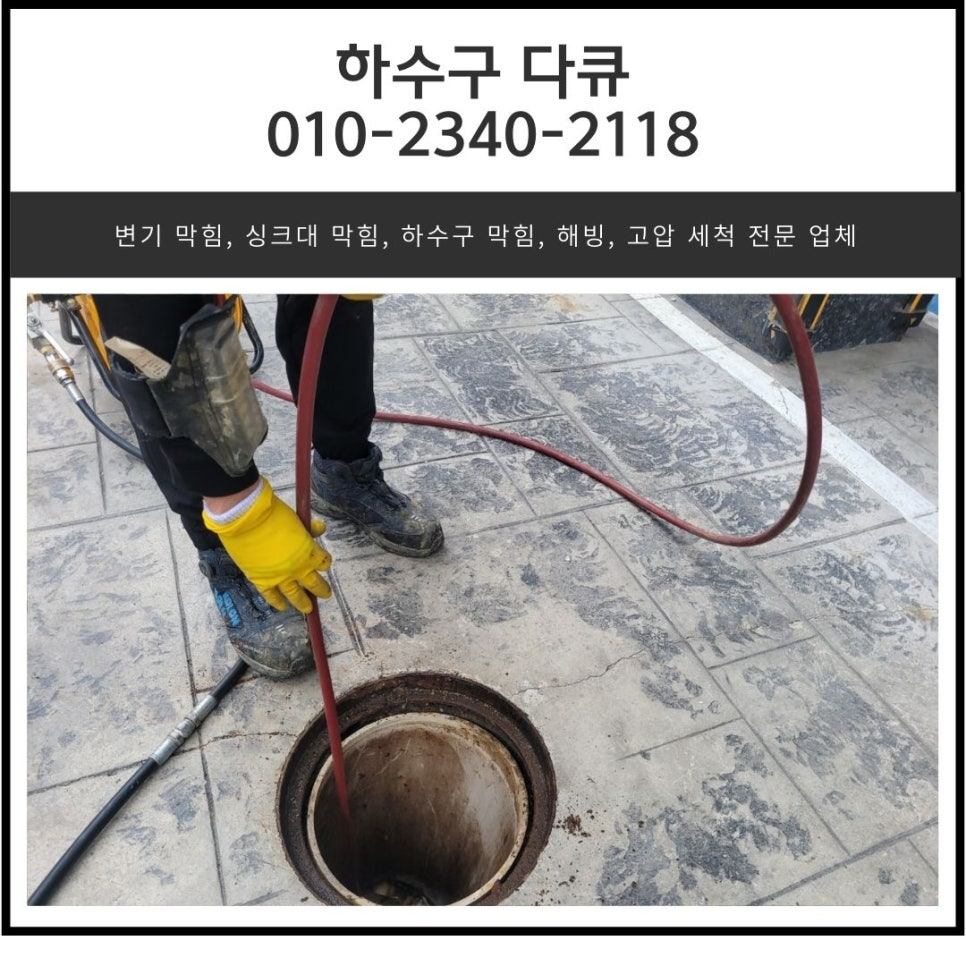
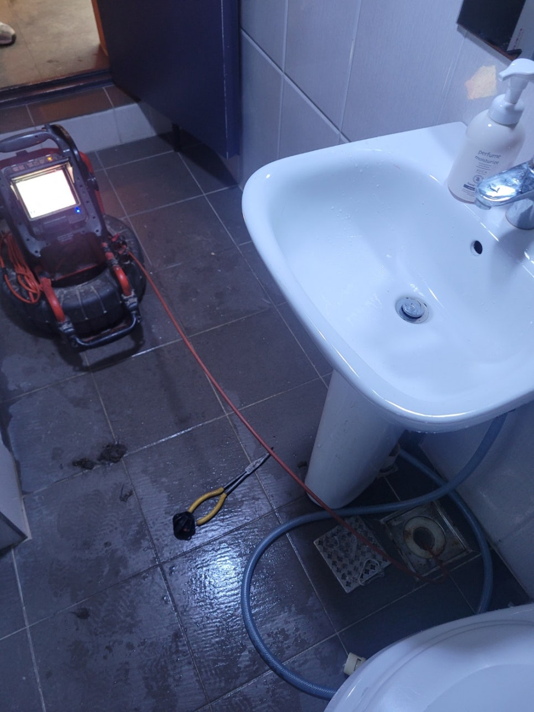
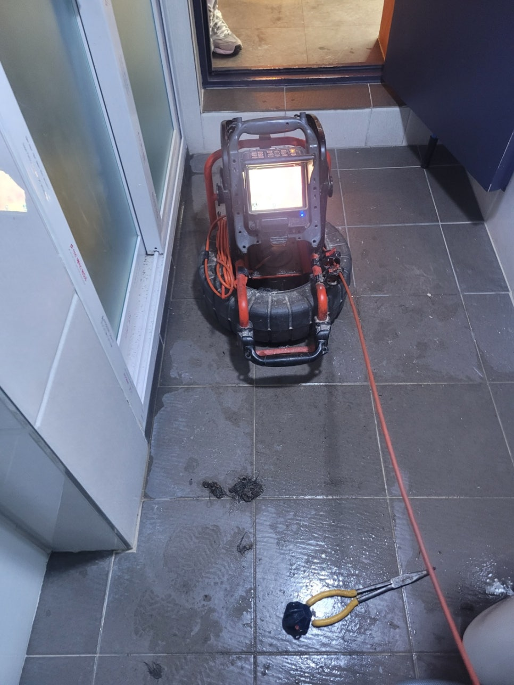
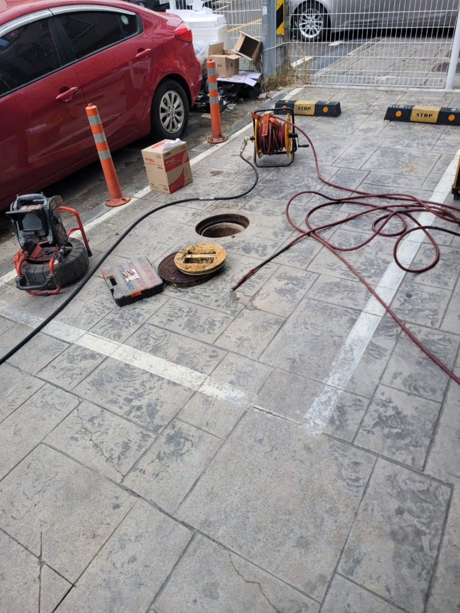
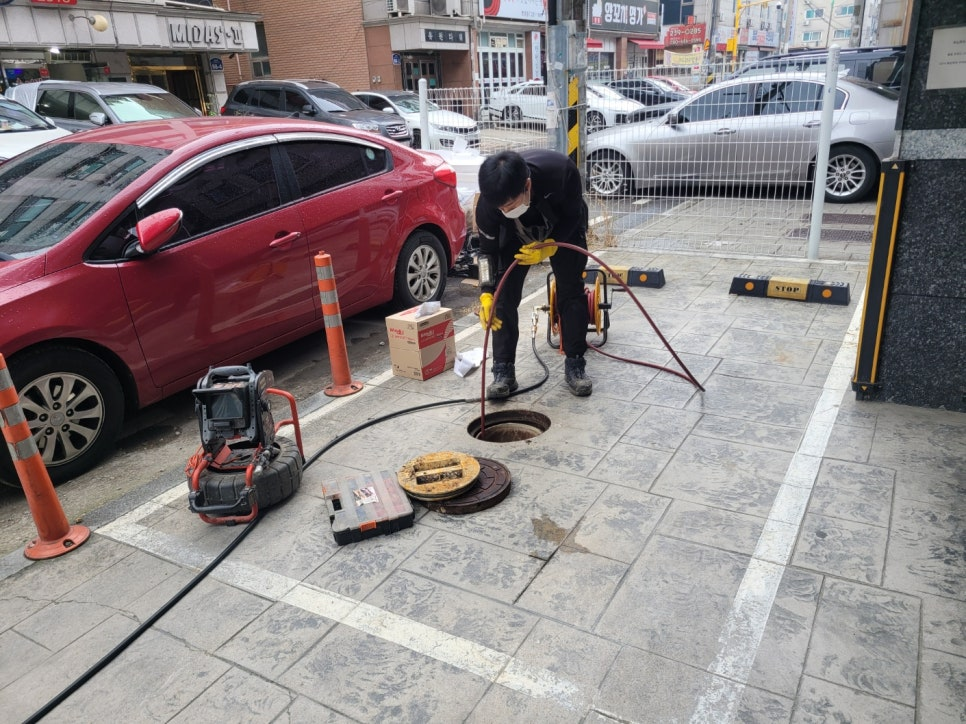
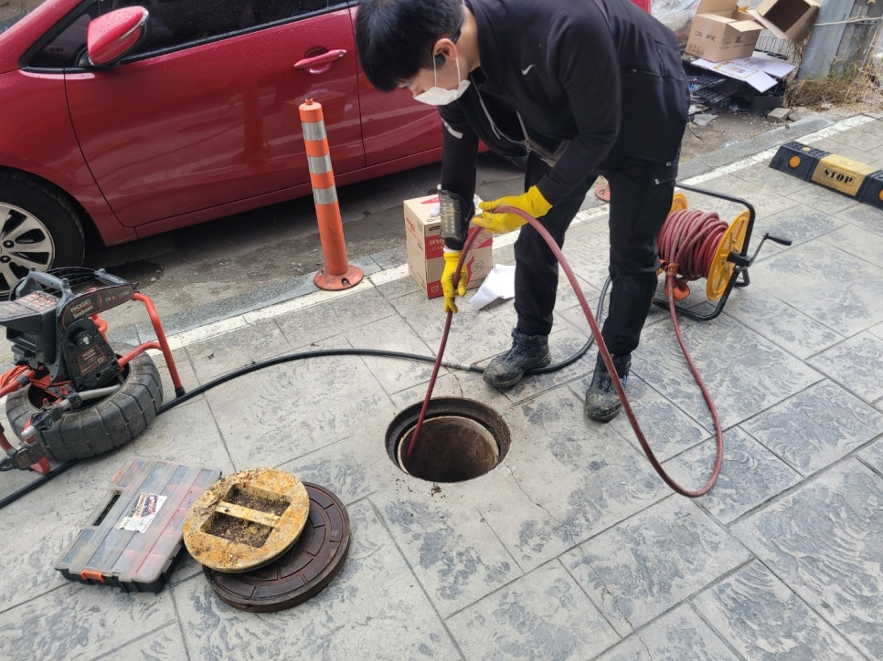
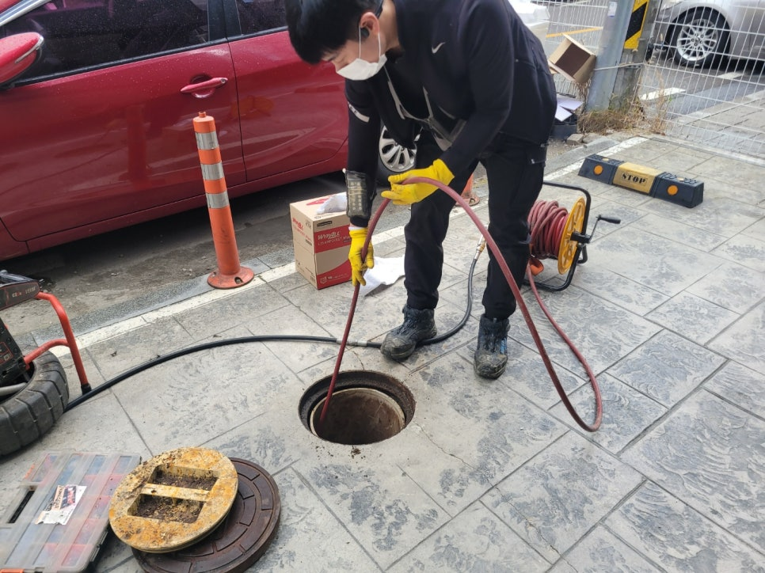

🏠 병점동 하수구 막힘 화성 진안동 화장실 바닥 뚫는 설비 업체
화성 병점 하수구막힘 전문 시공 후기

📋 작업 개요
- 위치: 화성 병점, 병점, 화성
- 서비스 유형: 하수구막힘, 배관막힘, 역류해결, 뚫는업체, 배관청소, 고압세척
- 작업 일시: 2024. 12. 4. 16:58
- 업체명: 하수구수사대 (010-5615-2118)
🔍 문제 상황
안녕하세요.
병점동 하수구 막힘, 화성 진안동 화장실 바닥 뚫는 설비 업체 하수구 다큐입니다.
상가주택의 경우 대부분 1층에 가게들이 입주해있고, 2층부터는 가정집으로 구성되어 있는 경우가 많은데요.
특히 1층에 음식점이 있을 경우 매장에서 주방을 많이 사용하고, 방문하는 손님들로 인해 불특정 다수가 화장실을 사용하다 보니 병점동 하수구 막힘이 일반 가정집보다 자주 발생할 수밖에 없습니다.
오늘 소개해 드릴 병점동 하수구 막힘 현장 역시 상가주택 건물이었는데요.
위층에 거주하는 가정에서 사용한 물이 1층 상가 화장실 바닥으로 물이 역류하는 현상이 나타나 손님들이 화장실을 사용할 수 없게 되면서 하수구 다큐로 연락을 주셨습니다.

🔎 원인 분석
💡 전문가 진단: 정밀 진단 장비를 사용하여 슬러지의 고착 여부를 판명하고 타격/세척 작업을 실시했습니다.
고객님께 주소를 전달받아 내비게이션으로 확인해 보니 20분 정도 떨어진 거리라 도착예정시간을 안내해 드리고 현장을 출발했습니다.
25분 만에 현장에 도착해 보니 바닥에 물과 오물이 역류해 내려가지 못하고 있는 상태였어요.
역류한 것부터 빨리 청소해야겠다는 생각에 사진으로 남겨놓지 못해 아쉽지만 물과 오물로 인해 화장실에 들어가기도 불편한 상태로 신속하게 석션을 준비해서 이물질을 제거했습니다.
1층 화장실 바닥에서 물을 사용하지 않고 있는 상태인데 물이 역류하고 있다는 것은 건물에서 흘려보낸 오수가 흘러가는 배관이 막혀있다고 예측할 수 있는데요.
화성 진안동 화장실 바닥 뚫는 설비 업체 하수구 다큐는 화장실 바닥으로 내시경 카메라를 진입시켜 정확한 원인을 파악해 보기로 했습니다.
화성 진안동 화장실 바닥 뚫는 설비 업체 하수구 다큐가 내시경 카메라를 이용해 화장실 바닥 배관을 점검해 보니 예상했던 대로 기름 슬러지와 각종 이물질로 인해 배관이 꽉 막혀있는 상태였습니다.
내시경 카메라를 이용해 배관 내부의 이물질을 촬영한 사진을 고객님께 확인 시켜드리고, 배관의 길이와 배관의 구배 등 자세히 설명해 드린 다음 작업 방향에 대해 안내해 드렸어요.

🔧 작업 과정
배관의 크기도 크고, 긴 상태에다가 딱딱하게 굳은 기름 슬러지와 뭉글뭉글한 기름 덩어리들이 가득 차 있는 상태이다 보니 플렉스 샤프트로는 해결이 어려워 고압세척을 진행하기로 했습니다.
고압세척 장비는 휘발유 엔진과 고압의 펌프가 설치되어 있는 상태로 강한 수압이 생성되어 배관으로 진입해 분사하게 됩니다.
차량에 설치된 물탱크에 많은 양의 물을 담아 높은 압력으로 한꺼번에 쏟아내며 배관에 쌓인 이물질을 청소해 주는데요.
물을 분사하는 노즐이 뒤쪽으로 물을 강하게 분사하면서 앞으로 전진해 슬러지 등 각종 이물질은 뒤쪽으로 보내주게 됩니다.
고압세척 작업으로 떨어져 나온 기름 슬러지 덩어리 중 일부에요.
성인 남자 팔뚝 굵기 정도 되는 딱딱한 덩어리를 포함해 정말 많은 양의 슬러지가 배관을 막고 있었습니다.
배관의 초입에는 기름이 찬 공기와 만나 하얗게 변해 있는 상태였는데요.
고압세척 작업을 진행하자 쌓여있던 오물이 쏟아져 나옵니다.
화성 진안동 화장실 바닥 뚫는 설비업체 하수구 다큐가 고압세척을 진행하면서 촬영한 영상인데요.
정말 속 시원하게 이물질들이 쏟아져 나옵니다.
한 시간 넘게 고압세척을 진행하면서 쌓여있던 각종 이물질들을 모두 제거해 드렸어요.


✅ 작업 완료
그렇게 많은 이물질이 쌓여있던 배관이 맞나? 싶을 정도로 모두 제거되고 깨끗해진 배관 내부를 확인할 수 있었습니다.
작업을 모두 마친 뒤에도 건물에서 물을 사용해 보게 한 다음 다른 문제는 없는지 확실하게 점검해 드리고 아무런 이상이 없다는 것을 확인한 뒤 장비를 챙겨 철수할 수 있었습니다.
경기도 화성시 향남읍 상신하길로328번길 26 5층 505호 5호




⚠️ 하수구 배관 막힘 예방 및 관리 가이드
- ✅ 머리카락, 비닐, 물티슈 등 물에 분해되지 않는 이물질은 하수구 유입을 절대 금지해 주세요.
- ✅ 하수구 거름망을 씌우고 모여진 이물질은 주기적으로 쓰레기통에 바로 비워주셔야 합니다.
- ✅ 배관 노후가 심할 경우 이물질이 더 쉽게 걸리므로 주기적인 배관 세척(고압세척 등)을 권장합니다.
- ✅ 작업 후 1년 이내 재발 시 하수구수사대에서 무상 A/S 보증 서비스를 제공합니다.
💡 핵심 정리
- 확실한 장비 작업(내시경 점검 및 샤프트 스케일링)으로 원인을 뿌리 뽑습니다.
- 작업 후 1년 이내에 동일한 부위 재발 시 100% 무상 A/S 서비스를 보장합니다.
- 서울 · 경기 · 인천 전 지역에 24시간 언제든 긴급 출동할 수 있도록 항시 대기 중입니다.
❓ 자주 묻는 질문 (FAQ)
🚨 화성 병점 하수구막힘 문제로 고민이신가요?
정확한 원인 진단과 확실한 시공으로 재발 없는 해결을 약속드립니다.
24시간 긴급 출동 | 서울 · 경기 · 인천 전지역 | 1년 내 재발 시 무상 A/S